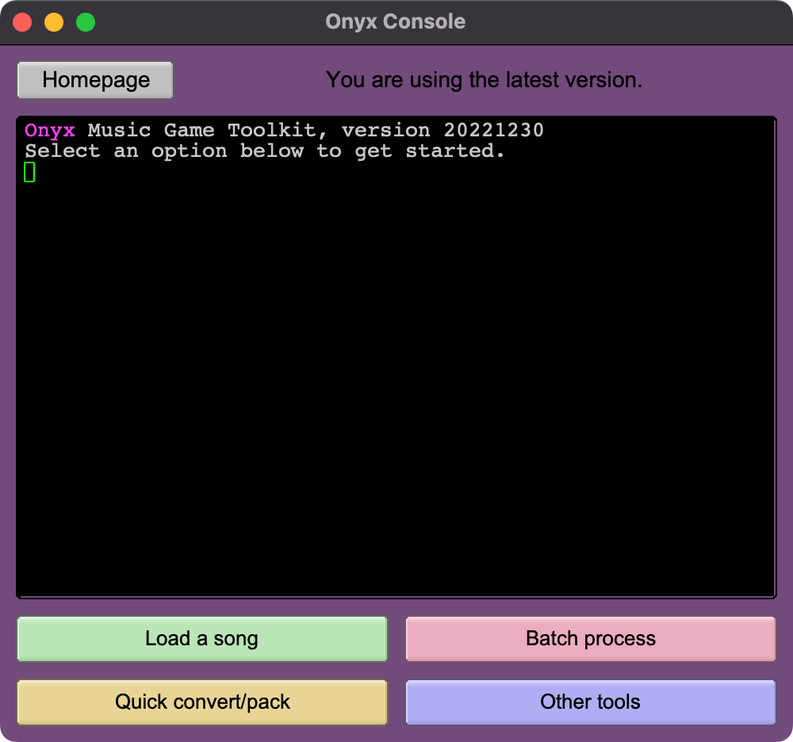
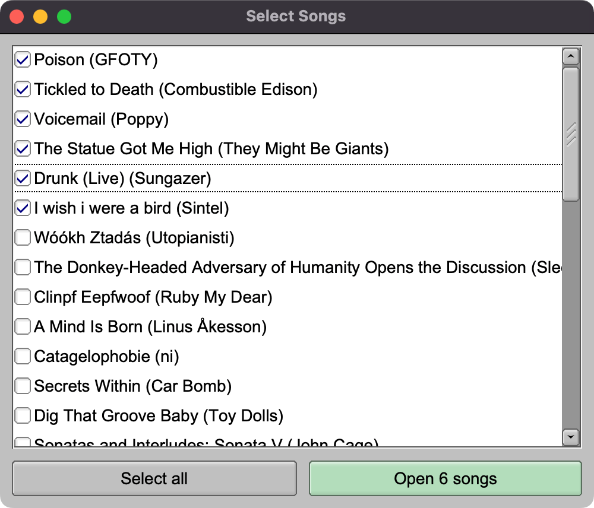
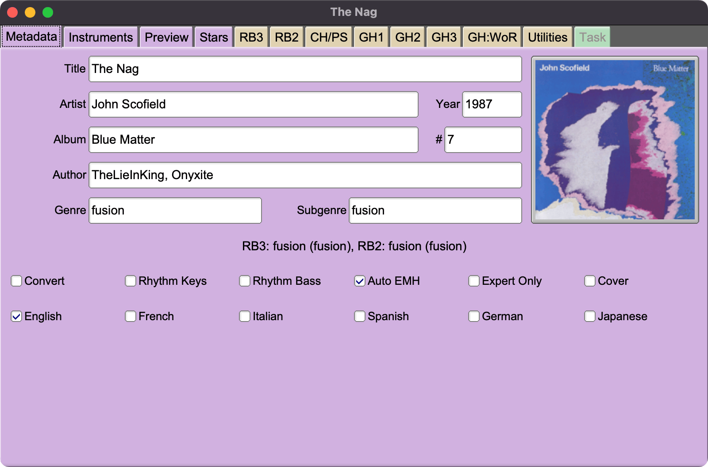
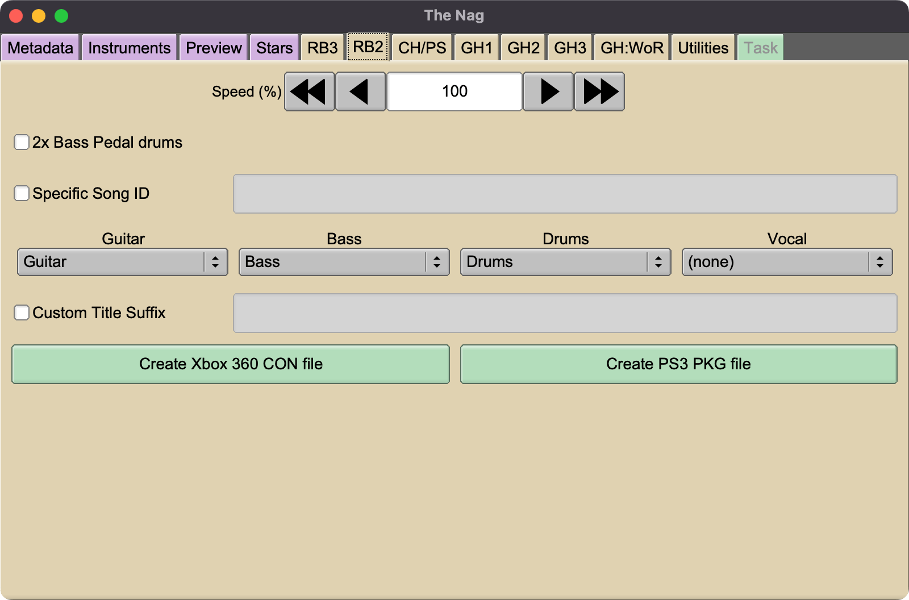
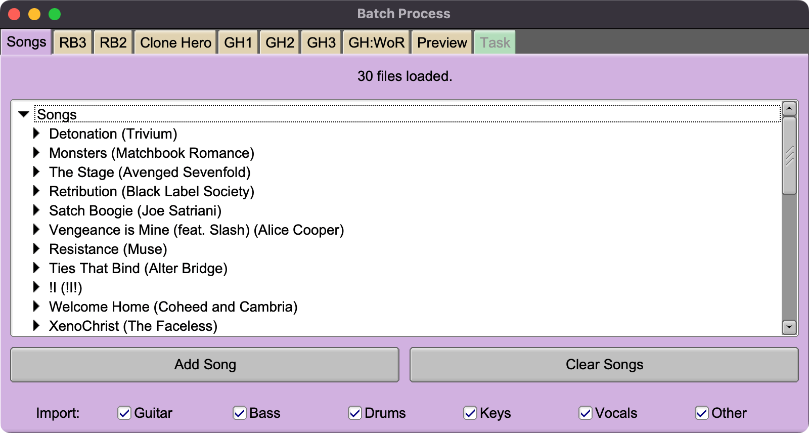
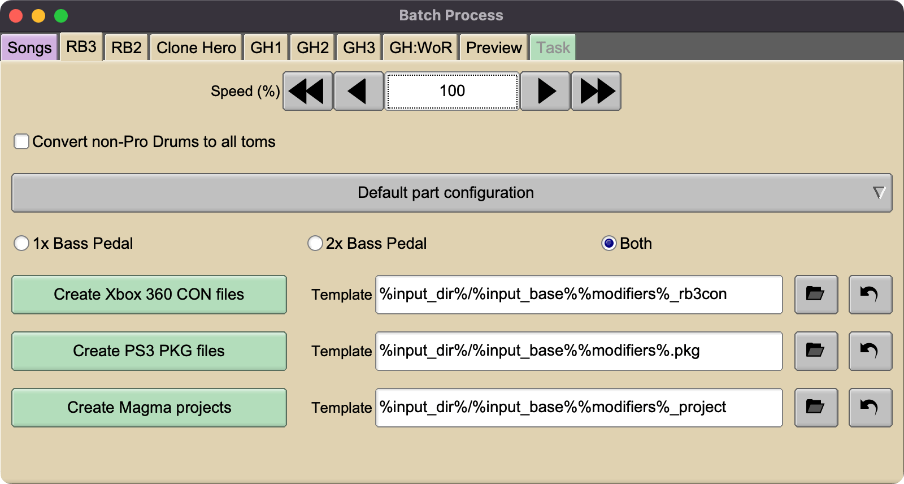
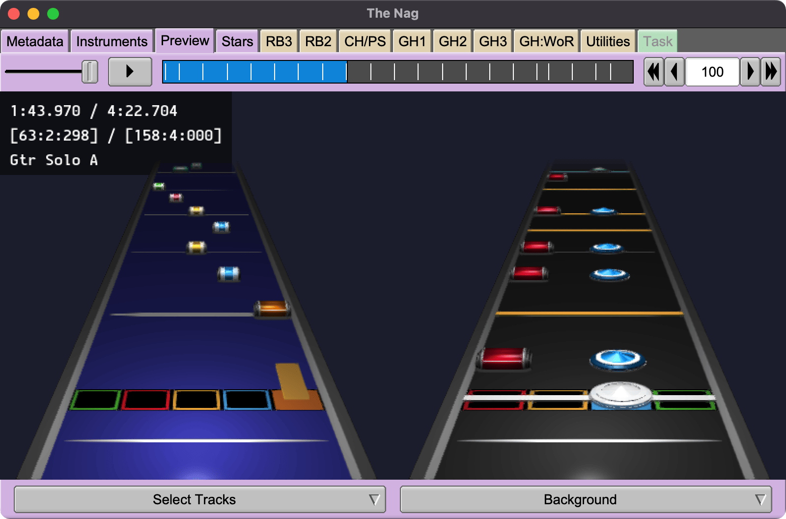
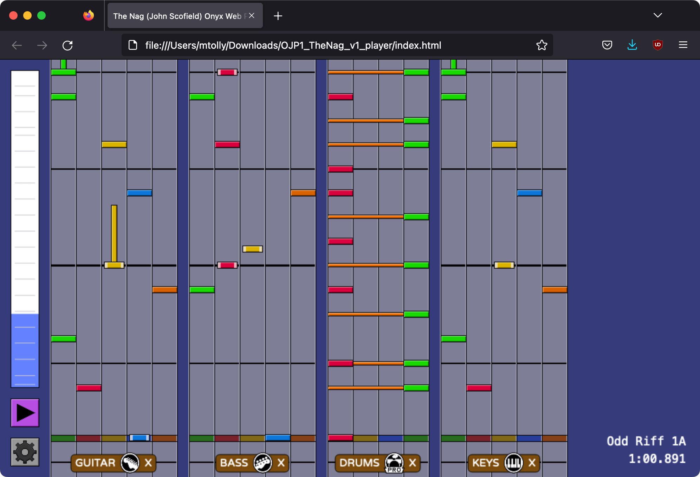
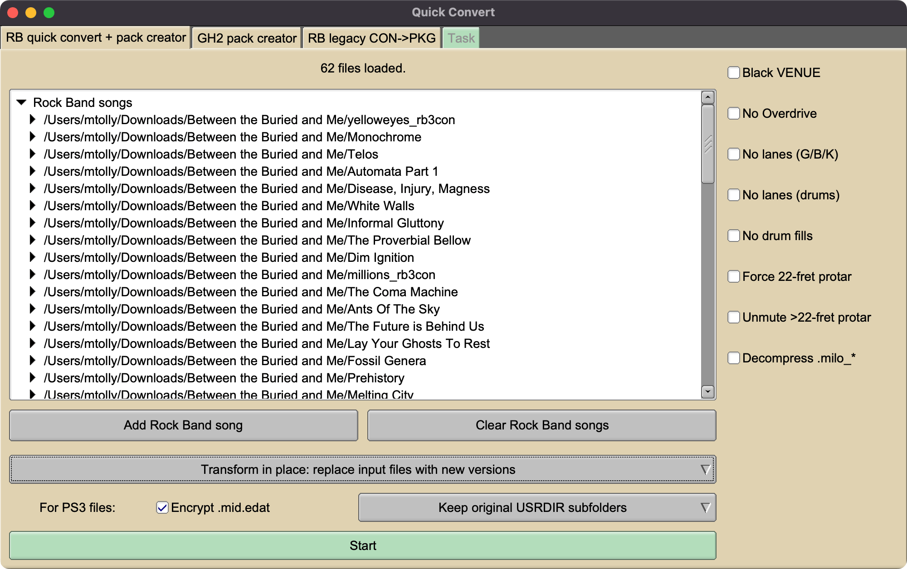

Onyx Music Game Toolkit (version _ONYXVERSION_)
By Michael Tolly onyxite@gmail.com
Onyx is a multipurpose build tool for rhythm games, particularly ones similar to the Guitar Hero and Rock Band series. It can import and export a wide variety of formats, move parts around, change song speed, fill in missing details, and assist with song authoring.
Many people have contributed code, research, and more to Onyx; see Help > Credits for details.
New versions and source at: https://github.com/mtolly/onyx/releases
Onyx is free software via the GNU General Public License v3; see Help > License or https://www.gnu.org/licenses/gpl-3.0.en.html
All original non-code assets such as graphics are licensed under Creative Commons Attribution-ShareAlike: https://creativecommons.org/licenses/by-sa/4.0/
Requirements
Onyx is currently compiled on:
- Windows 10
- macOS Monterey
- Linux kernel 4.4 (Ubuntu 16.04)
It may work on previous versions (such as Windows 7) but this is not certain.
By default, an embedded copy of Magma v2 is used to generate RB3 or RB2 files. This requires the Visual C++ runtime, and if on Mac or Linux, Wine.
On Mac, you can use the official installer, or you can use Homebrew (
brew install wine).However, macOS Catalina (10.15) does not support running Magma in Wine due to its lack of support for 32-bit programs. To produce Rock Band files on this OS you’ll need to turn Magma compilation off.
To bypass Magma compilation, go to
Edit > Preferencesin the top menu, and change the Magma selection to an option other than “Magma required”. Please make sure and test any resulting files! If you’re on Windows I recommend leaving it on “Magma optional”, so you can see any error messages; they’ll be converted to warnings and you’ll still get the resulting song file.
The Linux build is produced via an Ubuntu 16.04 Docker container, and should work on most any modern distribution. Older distributions might require additional installations:
- On CentOS 7,
yum install mesa-libGL fontconfigis required.
Setup Instructions
On Windows, run the installer, then run
onyx.exe(or the installed shortcut). Windows may label the program as untrustworthy due to not being signed/verified; hopefully there is a way to work around this.On Mac, see instructions below.
On Linux, make the
.AppImageexecutable, place it wherever you like, and run it. Your system may also offer to install desktop integration.
Instructions for macOS
Follow these instructions to allow Onyx to run correctly on macOS.
Extract the contents of the zip file, and move the Onyx app to the Applications folder, or wherever else you want to keep it.
Run the following command in Terminal (replace the location if you moved it somewhere other than Applications)
xattr -r -d com.apple.quarantine /Applications/Onyx.appThe app should now run, but may have problems loading files due to permissions errors. To fix this, take a song file that is in a location such as your Downloads folder, and drag and drop it onto the “Load a song” button. This seems to tell macOS to give the app normal permissions to your user folders, so after that you should then also be able to use the open file dialog and batch mode to load songs.
Supported Input Formats
Onyx can import the following song formats:
Rock Band (1, 2, 3, Beatles) DLC files
- Supports Xbox 360 STFS (CON or LIVE), PlayStation 3
.pkg, and Wii.wad. - Both single-song files and packs are supported.
- Official PS3 DLC whose
.mid.edatare encrypted with RAP files are supported. Copy RAP files toonyx-resources/raps/CONTENTID.RAP. - Encrypted audio is supported, except for Beatles-format encryption.
- Supports Xbox 360 STFS (CON or LIVE), PlayStation 3
Rock Band (1, 2, 3, Beatles)
.ARKfiles for Xbox 360, PlayStation 3, and PlayStation 2- Import from
MAIN.HDR,main_xbox.hdr, ormain_ps3.hdr. - Xbox 360 and PS2
.isofiles can also be imported directly. If extracting a PS2 disc yourself, use something like Apache3 to get the 2nd layer of the dual layer discs, as most programs do not support this.
- Import from
Rock Band 4 PlayStation 4 extracted files
- Attempts to convert venue information back to RB3 format; results will vary.
- Encrypted audio is supported.
Magma (v1 or v2) RBA files
Frets on Fire / Phase Shift / Clone Hero formats
- Both
notes.midandnotes.chartare supported. - Ogg Vorbis, MP3, Opus, and WAV audio are supported.
song.inican be absent if usingnotes.chart.- Audio files must be named according to PS/CH conventions.
- Unencrypted Clone Hero
.sngfiles are also supported. (The songs that come with the game are a different format and are not supported.)
- Both
Magma (v1 or v2) projects (
.rbproj)-
The following Guitar Hero game discs for Xbox 360:
- Guitar Hero II
- Guitar Hero III
- Guitar Hero III 2007-07-06 beta build
- Guitar Hero: Aerosmith
- Guitar Hero World Tour
- Guitar Hero Smash Hits
- Guitar Hero: Metallica
- Guitar Hero: Van Halen
- Guitar Hero 5
- Band Hero
- Guitar Hero: Warriors of Rock
Import directly from the
.iso, or fromdefault.xexin an extracted folder. -
DLC (Xbox 360 LIVE files or PlayStation 3
.pkgfiles) for the following Guitar Hero games:- Guitar Hero II (360)
- Guitar Hero III (360, PS3)
- Guitar Hero World Tour (360)
- Guitar Hero 5 (360, PS3)
- Guitar Hero: Warriors of Rock (360, PS3)
-
The following Guitar Hero game discs for PS2:
- Guitar Hero
- Supports the hidden songs Trippolette and Graveyard Shift
- Guitar Hero II
- Guitar Hero Encore: Rocks the 80s
- Guitar Hero III
- Guitar Hero: Aerosmith
- Guitar Hero World Tour
- Guitar Hero Smash Hits
- Guitar Hero: Metallica
- Guitar Hero: Van Halen
Import directly from the
.iso, or fromMAIN.HDRorDATAP.HEDin an extracted folder. - Guitar Hero
Guitar Hero Three Control Panel
.sghsetlistsRocksmith 2014 (
.psarc, PC/Mac/Xbox/PlayStation format)Translates to Pro Guitar / Pro Bass in Rock Band 3 and Phase Shift formats.
- Handshapes and chord names try to translate to the appropriate Pro Guitar conventions, but in some cases there may be odd results due to different functionality.
- Mustang-compatible charts currently just apply the muted status to notes over fret 17. In a future version, this will be improved to try to find sections of notes to move an octave down, as official charts do.
- The Guitar slot imports the first present chart of: Lead, Combo Lead, Combo Rhythm, Rhythm.
- 5-fret charts are generated with EFHIII's Autocharter.
DTXMania (DrumMania / GuitarFreaks) simfiles (
.dtx/.gda)- XG features (5-fret guitar/bass, extra drum pads) are supported.
- Drums are translated to Pro Drums as well as Phase Shift Real Drums. (Real Drums display in the web player but aren’t yet in PS output.)
- Keysounded audio is rendered to stem files.
- Currently only each instrument’s highest difficulty from a
set.defis imported as Expert, and difficulties below this are autogenerated. To import a specific difficulty directly, import its.dtxfile.
BMS / Be-Music Source (
.bms,.bme,.bml,.pms)- Main track is imported as Keys, and if a player 2 track is present it is labeled as Rhythm.
- Mania tracks can be converted to 5-fret, drums, or Pro Keys, with down-conversion performed via EFHIII's Autocharter.
osu! (
.osz)The following chart types are supported:
- osu!mania charts are labeled as a Keys part, and can be converted to 5-fret, drums, or Pro Keys, with down-conversion performed via EFHIII's Autocharter.
- osu!taiko charts are converted to 4-lane drums, and include an audio sample track.
Each difficulty is imported as a separate song, with the difficulty names as labels.
StepMania (
.sm,.dwi)- When converting to Phase Shift format, dance charts are automatically assigned to the Phase Shift dance mode.
- Dance tracks can also be converted to 5-fret or drums. In batch mode, dance is assigned automatically to drums, or to 5-fret if converting to a game with no drums. This can be changed via the part configuration options.
Power Gig: Rise of the SixString (Xbox 360, PS3)
- Import disc data from the Xbox 360
.iso, orData.hdr.e.2. - Xbox 360 DLC is also supported.
- Import disc data from the Xbox 360
Rock Revolution (Xbox 360)
- Import disc data from the
.isoordefault.xex. - Xbox 360 and PS3 DLC are also supported.
- Import disc data from the
Freetar
.sngfiles- Not extensively tested, some songs may not work.
Basic Usage
Onyx's core function is to “import” from one song format, and then “export” to another one. There are two methods you can use to do this:
- Load a single song into an editor window, and export it to a new file, with full control of metadata and instrument assignment
- Batch recompile, where you can queue up a list of songs, and perform a similar import + export process on all of them
Single Song Mode
To load a single song, click on the main console window, and select a file from the dialog box.

Note that folder-based formats may require particular files to be selected; for example, Clone Hero / Phase Shift songs can be imported by selecting the song.ini file, or notes.chart if there is no song.ini.
But, you can also simply drag and drop any file or folder onto the button. If given a folder, this will scan the contents for any recognized songs. If more than one song is found, a window will pop up letting you select which songs you want to import.

Once a song is open, you can make changes to metadata and instrument settings.
The Metadata tab displays loaded metadata from the source song. You can edit data here to have it reflected in any converted output.

The Instruments tab shows all the gameplay modes Onyx found in the song. Modes are sorted first by logical instrument, and then the specific controllers that instrument supports.
Deselecting an instrument mode checkbox will hide it from any output files.
In addition to difficulty selections, some controller modes have other specific options, such as drum freestyle sounds, vocalist gender, etc.
Then, use one of the target game tabs to start a conversion. Each tab has options specific to that game, as well as "slots" that correspond to the instruments supported by that game. For example, Rock Band 2 has four slots, for guitar, bass, drums, and vocals:

Depending on what instruments were present in the file you imported, you can reassign them to different slots in the new file you create. The selection from each dropdown refers to an instrument from the original imported file, which will be assigned to that slot when converting.
Finally, use one of the buttons to start a conversion. Most game targets support a few different output formats. Most of these will ask you where to save a new file or folder; an exception is Guitar Hero 1 and 2, which have . This will ask you for the location of a MAIN.HDR file, and then MAIN.HDR and MAIN.ARK will be directly modified with the new song files.
Batch Mode
To run a batch conversion, first click on the main console window. Then in the new window, select , and select a file from the dialog box. Or, just drag and drop files or folders into the empty panel.

Individual songs can be deleted by selecting a song and pressing the Delete key. They can also be moved up/down in the list with Ctrl + Up and Ctrl + Down (or Command + Up and Command + Down on Mac).
At the bottom of the panel are toggles for whether specific instruments should be imported. These can be helpful if unwanted instrument parts are causing compilation errors.
Then, switch to a target game tab. Some game-specific options are available, followed by buttons. Each button has an associated Template box, which determines how newly created files and folders will be named. You can hover over one of these to see a list of supported %templates%. The folder button to the right allows you to select a folder, which will overwrite the folder part of the current template (so all created files will be in that folder). The farthest right button will reset the template to its default value.

Game-Specific Info
Rock Band 3
Supports creating a CON (Xbox 360), PKG (PS3), or Magma v2 project.
By default, tempos are modified to attempt to stay within Magma's range of legal tempos, which is 40 to 300 beats per minute. This may produce odd results sometimes, and is more restrictive than what appears to work in the games. This behavior can be disabled in Preferences.
Overdrive phrases must follow various rules; they may be modified if they produce invalid unison phrases, have no notes under them on any difficulty, or have no notes between two adjacent phrases on any difficulty.
If the “automatic tom markers” option is turned on, an FoF song that doesn’t have any tom markers and that does not have
pro_drums = Truein the song.ini will have tom markers added over the whole drum part, under the assumption that Pro Drums have not been authored for the chart.Open notes will usually be translated to green notes, but adjacent sequences will be adjusted if necessary to preserve motion.
In addition, strummed open notes between chords are by default interpreted as muted strums, and are translated to the usual style of the lowest note of an adjacent chord. This behavior can be disabled in Preferences.
The song speed can be modified to produce sped up or slowed down songs. This will modify both the audio and MIDI, and add
(X% Speed)to the title. Different speed versions may not pass Magma in all cases, if certain events become too close together or too far apart. If this happens, you can produce a Magma project and make any needed changes, then give the project back to Onyx to compile.In batch mode, a few settings are available for moving/copying Guitar/Bass/Keys parts, as well as converting drums parts into guitar for an interesting challenge. When moving Keys parts to Guitar/Bass, force notes will be applied so charts keep their correct strum/HOPO notes according to the RB3 keytar algorithm. Note that in some cases (when the input and output both use MOGG audio) the output may assign multiple instruments to the same audio channel indexes, which works in game but will cut out the audio if either player misses.
By default, an input format like Phase Shift that can contain both 1x and 2x Bass Pedal drums charts will generate two separate songs. If you are interested in only 1x or only 2x, select the appropriate Bass Pedal option. Songs that are detected as 2x Bass Pedal versions can also produce an automatic 1x version, using an algorithm to remove certain kick notes.
When creating a Magma project, a REAPER project will also be generated so any remaining problems can be quickly edited and re-exported to MIDI. This avoids a few bugs in REAPER’s own MIDI import function. It also applies most of the C3 template to the MIDI tracks, so you get note names, colored tracks, and RBN preview windows.
Rock Band 2
Supports creating a CON (Xbox 360) or PKG (PS3). Most options are similar to Rock Band 3.
Songs will attempt to be validated through Magma v1, but this is not required to succeed.
Overdrive rules are more restrictive than Rock Band 3; if guitar/bass/drums are all present, unison phrases must include all three of them. 2-instrument unisons will be dropped on one of their instruments.
RB3-format
VENUEtracks are converted to RB2 format. Note that due to how RB2 compilation is currently implemented, a source file with an existing RB2-format venue track may not be preserved correctly; this will be fixed in a future release.Due to Magma v1's requirements for lower difficulties, they may be modified to use all frets present on higher difficulties.
Clone Hero & Phase Shift
Generates a song in the descended Frets on Fire format (song.ini, notes.mid, Ogg Vorbis or Opus audio). These should more-or-less work in the latest version of Clone Hero, the latest free version of Phase Shift, and the Steam version of Phase Shift. Songs may also work in Frets on Fire X, but this is not tested.
Songs can be output as a folder, a zip file containing a folder, or an SNG file (supported by newer versions of Clone Hero).
Go to Edit > Preferences to select between Ogg Vorbis and Opus audio. Opus is supported by newer versions of Clone Hero.
Due to how the conversion is implemented, some non-RB features such as Real Drums and Real Keys may not survive a PS-to-PS conversion. However Dance mode, other 5-fret charts such as PART RHYTHM, and Clone Hero 6-fret tracks should remain.
Guitar Hero & Guitar Hero II
Supports a few different formats for the Harmonix GH games on PS2 and Xbox 360:
Add a new bonus song to a PS2 GH1/GH2/GH80s ARK file. GH2 360 ARKs are not supported yet.
Create a folder of files ready to add manually to an ARK. This is also PS2-only currently.
Create a DLC LIVE file for GH2 for Xbox 360. This requires a jailbroken (RGH or JTAG) console to load.
NOTE: GH2 in some configurations appears to have a limit of 16 individual DLC package files. Trying to load more than 16 can not only fail to load the ones past 16, but the game may corrupt your save data when saving. To avoid this, please use the “Make a pack (360)” tool in the Quick Convert window to combine songs before playing.
PS2 songs have been tested with standard GH1/GH2, as well as Guitar Hero II Deluxe. Several extra features are also supported for Guitar Hero II Deluxe:
- Drum charts
- Extra metadata used by the upgraded song list
- Solo markers
For PS2 GH2 output, practice mode audio generation can be toggled on/off. Disabling it saves some space, and a significant amount of conversion time. If disabled, practice mode will still work, just with no audio. If enabled, songs with no instrument stems will use the full track as their practice audio.
In batch mode, lead and coop parts are assigned automatically based on what parts are present.
- Lead will be assigned to the first of [guitar, rhythm, keys, bass]
- Coop will be assigned to the first of [rhythm, bass, keys] which is not already used for Lead
To customize part assignment, use the “Load a song” mode.
Guitar Hero III
Creates custom DLC files for Guitar Hero III, for use on a jailbroken Xbox 360 (RGH or JTAG) or PlayStation 3.
Supports lead + rhythm/bass charts, automatic HOPO forcing, star power, battle mode powerups (in the star power locations), face off sections, practice sections, and basic drum animations (translated from Rock Band drum animation notes, or generated from a drum chart).
After creating DLC files, you must take all your custom songs, plus any official DLC you want to load, and create a “Song Cache” from them. See below for details. This is required to load your songs!
Normally GH3 will end a song shortly after the last playable note, which would often be too soon. However it seems the game checks both lead and rhythm tracks on your current difficulty to find the last note, so as a hack for now, a dummy note is added to each difficulty on the rhythm/bass track to extend the song length.
Generated charts use MP3 audio, even on Xbox 360 where official content uses the native XMA format. MP3 is much faster/easier to generate and does not waste significant space in GH3 (unlike later GH games).
On stock GH3, it is possible to load roughly 70-80 songs in the Download setlist, though this number can decrease as you add scores to songs.
IMPORTANT: While testing loading setlists of custom songs on the Xbox 360 version, it has been observed that the save data can get into a state where it will no longer save, possibly due to a conflict with attempting to save the high scores for customs. This does not appear to be a permanent issue, as removing the custom songs should allow saving again. But, it is still recommended that you back up any save data you care about before loading any custom songs.
Guitar Hero: Warriors of Rock
Creates DLC files for Guitar Hero: Warriors of Rock, for use on a jailbroken Xbox 360 (RGH or JTAG) or PlayStation 3.
There appears to be a limit of slightly over 700 songs’ metadata in one file; any more causes a crash on game launch.
IMPORTANT: In addition, it may be possible to corrupt a save somewhat by loading too many new songs over multiple sessions. When this happens, loading any more new songs will crash the game. So, it is recommended you back up any save data you care about before loading custom songs, in case this happens, until the issue can be researched in more detail.
After creating DLC files, you must take all your custom songs, plus any official WoR DLC you want to load (pre-WoR DLC is not required to be included), and create a “Song Cache” from them. See below for details. This is required to load your songs!
Guitar and bass support some of the Clone Hero feature set, with caveats.
- Extended sustains can only move upward (hold a lower note and play higher notes). Ones that move downward will be trimmed back.
- Tap notes only support single fretted notes, for compatibility with the Guitar Hero: World Tour slider control. Open notes and chords will become HOPOs.
- Open notes work on both guitar and bass, but HOPO open notes only work on bass. On guitar, they will become strums.
Drums can be created from 4-lane, 5-lane, Pro Drums, or Real Drums inputs.
- Pro/Real can be converted to 5-lane, or simply copied as 4-lane. Select the appropriate option on the WoR conversion tabs.
- Pro to 5-lane conversion works as follows:
- Yellow cymbal becomes yellow
- Green cymbal becomes orange
- Blue cymbal becomes orange, or yellow if there’s already an orange
- Toms work the same, targeting blue and green
- Drum sustains are not supported yet. In the future, these should be generated from Rock Band style drum lanes.
- Freestyle sections during chart gaps are not added yet due to some technical difficulties.
- Velocity (accent and ghost) is supported if the Clone Hero dynamics event is present, and 2x Bass Pedal charts are translated to Expert+. Ghost notes are only present in Expert+; in the future, an option may be added to instead discard ghost information and include those notes on Expert as well.
Vocals work basically the same as Rock Band, translating phrases, talkies, and slides. Phrases are encoded in a slightly different way; longer stretches of empty space are broken up into multiple empty phrases, and short gaps between phrases are appended to the following phrase.
Band animations and lighting/camera are not controlled yet, so a generic camera cut rotation is used, and the drummer and singer do not have animations.
In batch mode, guitar and bass will be selected automatically from the available tracks. If there is no suitable track for bass, guitar will be copied to bass due to the lack of open pulloff support on guitar.
Multitrack audio is now supported. Note however that separated drums audio is required to match into the 4-track format of kicks, snare, toms, and cymbals. Any drum tracks that contain more than one of these, such as a single mixed drum track or a RB-format layout with toms and cymbals together, will currently be routed to the backing track instead. 4-track audio can be imported from Phase Shift/Clone Hero format.
Currently, MP3 audio is used on both Xbox 360 and PS3. Official content (and previous Onyx output) for Xbox 360 used its own XMA format, which has some advantages, but is more difficult to generate without Microsoft tools.
Non-separated audio may behave oddly in multiplayer. It appears the backing track is moved towards the center (mono), while the instrument tracks are positioned in space to match their highway position. More research is needed into whether this behavior can be disabled.
Song titles and artists may sometimes get a prefix added in front; this is to prevent a game crash when sorting by title or artist caused by non-ASCII characters (even those that are supported by the game fonts).
Rock Revolution
Creates DLC files for Rock Revolution, for use on a jailbroken Xbox 360 (RGH or JTAG) or RPCS3. PlayStation 3 consoles are not yet supported.
Guitar, bass, and drums are supported.
- Guitar and bass support arbitrary HOPOs, but not repeated HOPOs on the same note, and no HOPO chords.
- Drums can be converted to target either the native 6-pad (7-lane) format, or the RB-compatible 4-pad (5-lane) format.
Because of the limited song ID space used by the game (every song must have a unique 4-digit ID), Onyx does not attempt to assign random IDs. Instead, all custom songs are created using the same ID, and a tool is provided to renumber songs once you have a set of songs you wish to load.
- Go to
Quick convert/pack > RR renumber, load your songs (LIVEor.pkgformat), hitStart, and the files will be edited and resaved in place.
- Go to
It does not appear to be possible to prevent selecting an instrument part in game that has no chart; however if you try to play such a part, you will simply get a popup booting you back to the menu. Onyx will assign such parts a “zero skulls” difficulty rating.
Preview Tools
3D Preview

The Preview tab of a single-song window lets you view and listen to supported gameplay tracks in a full 3D graphical display. Currently 5-fret guitar/bass/keys (including tap/open notes), 4-lane drums (including cymbals), and Mania are supported, with more to come. Background images and videos from certain input formats are also supported.
By default, the preview targets 60 frames per second. You can configure this in Edit > Preferences. Antialiasing (MSAA and FXAA) can also be configured.
Gem models and textures created by Inventor211. Most textures, models, and shaders are customizable, inside the onyx-resources folder.
- Windows:
C:\Program Files\OnyxToolkit\onyx-resourcesor wherever you installed it - Mac: View contents of
Onyx.app, thenContents/MacOS/onyx-resources - Linux: Extract
.AppImage, thenusr/bin/onyx-resources
The file 3d-config.yml contains settings you may also want to edit.
Web Preview

This is an older preview method which generates a JavaScript (Canvas) chart preview app for web browsers. The resulting webpage can play the audio and display tracks in 2D “Beatmania” style.
Supports all Rock Band 3 instrument tracks, including Pro Guitar/Bass/Keys, as well as Clone Hero’s 6-fret (GHL) mode, 5-lane Drums, and PS Real Drums.
To generate a preview app, from a single song window, go to Utilities and click , and select where to save the new folder. Or from batch mode, go to the Preview tab, and click to generate a folder for each song according to the Template. You can run the app locally by opening index.html, or place the folder on a web server.
Colors used for drawing the display can be tweaked by editing the file customize.js. Images can be edited in the images folder, but many sizes are currently hardcoded, so only limited changes are possible.
Quick Convert

Quick Convert is an alternate tool that can perform several different kinds of processing/conversion on existing Rock Band format songs, without doing the normal import + export process. Some things it can do:
- Convert between Xbox 360 and PS3 formats, as well as to Dolphin/Wii
- Encrypt or decrypt
.mid.edatfiles in PS3 format - Combine songs into packs
- Extract individual songs from packs
- Various MIDI transformations useful for gameplay or preview recording:
- Replace
VENUEtrack with a mostly blacked-out background - Remove overdrive, trill/tremolo lanes, drum activation fills
- Remove the Mustang version of Pro Guitar/Bass tracks, ensuring the Squier version will always be played
- Unmute muted Pro Guitar/Bass notes over fret 22, which allows you to include such notes when compiling under Magma, and then unmute for recording a preview video
- Copy author info from the C3 Magma comment format to the newer DTA format readable by RB2/RB3 Deluxe
- Remove some tags commonly appended to titles, including
(2x Bass Pedal)and author signatures like(O)
- Replace
The following formats are supported as inputs:
- Xbox 360 STFS (CON or LIVE)
- PS3 .pkg
- Extracted contents of 360 or PS3 format songs
- Magma (v1 or v2) RBA
And these are supported as outputs (depending on mode selection):
- Xbox 360 STFS (CON or LIVE)
- PS3 .pkg
- Dolphin/Wii .app files
Drag supported input files in, and they should show up if songs are properly recognized. Then select an output mode, MIDI/milo transformation settings on the right-hand side, and use the output controls to begin processing.
Other tabs under the Quick Convert window:
Clone Hero Quick Convert
This can perform a few different operations on Frets on Fire / Phase Shift / Clone Hero format songs:
- Convert between folder and
.sngformats - Reencode audio from other formats to .ogg or .opus
- Convert .chart files to MIDI
Songs can be modified in place, or new folders or
.sngfiles can be created via a filename template.- Convert between folder and
GH2 Pack Creator
Combines Guitar Hero II (360) CON/LIVE files into packages containing multiple songs. (This also works with Rock Band songs, but Quick Convert is now recommended to make Rock Band packs.)
For GH2 (at least in some configurations), packs are required due to a limit of 16 total package files.
To use, drag in the existing files to be combined, give the package a name to identify it, and click the appropriate button below. GH2 requires LIVE-format packages.
All files from the inputs are combined into one tree for the package. If more than one input contains the same file:
- If the file ends in
.dta, the contents are combined into one file. - If the file is
spa.bin(seen in GH2 360 files), it is ignored. - Otherwise, the pack will fail to create.
The game information (name, title ID, thumbnail) are taken from the first input package in the list.
- If the file ends in
Direct CON->PKG
This is an older method of converting Xbox 360 (CON/LIVE) files directly to PS3 .pkg files. This can usually be done by the main Quick Convert window with more options; this tool is preserved because it can also work on things that are not valid standalone songs, such as Pro Guitar/Bass upgrades.
Other Tools
Stars Calculator
The Stars tab on a single-song-view contains score cutoff calculators for Rock Band 3, Guitar Hero (1), and Guitar Hero 2 / 80s, with more games planned to come. Select the tracks you want to include, and star cutoffs will be computed.
MIDI/.chart Functions
Fill in automatic lower difficulties
Generates CAT-like automatic reductions for empty difficulties in a MIDI. Quality is not guaranteed, but they should pass Magma.
To use, ensure that there are no notes or events authored for a difficulty you want to be filled in. (For Pro Keys, remove the
PART REAL_KEYS_?track entirely.)If a drum track with no animations is present, drum animations will also be generated. These are of somewhat higher quality than the ones Magma can generate, as they will always handle tom markers correctly, and have more of a preference for double strokes rather than crossing hands.
Find hanging Pro Keys notes
Looks for cases in a Pro Keys track where a range shift occurs less than 1 second before a note that is not visible in the previous range.
Make Reaper project with RB template
Imports a MIDI file into a REAPER project. It avoids a few bugs in REAPER’s own MIDI import function, and applies track names and note colors similar to the RBN or C3 project templates.
.chart to MIDI conversion
Converts a .chart file to a corresponding MIDI with as little changes as possible. Almost all supported data should be preserved; one exception is open note extended "sustains", which will be trimmed due to the limits of the Phase Shift open note format.
MOGG/VGS/FSB Creator
Generates an unencrypted game audio file from a set of input audio files. Created MOGG files should work on Rock Band games, Guitar Hero II for Xbox 360, and newer games such as Audica, with a proper seek header. Created VGS files should work on the PS2 games GH1, GH2, and GH80s; I have not tested with PS2 Rock Band games.
The channels of all the input files, which can be WAV, OGG, MP3, or FLAC, will be merged into one multichannel file. As with the batch load screen, you can select a song row, and press Delete to remove it, Ctrl+Up to move it up in the list, or Ctrl+Down to move it down.
VGS files can be created with inputs of differing sample rates, but it is recommended that all your rates be multiples of a large common factor so that channels are interleaved in a regular pattern. MOGG files must have the same sample rate among all input files.
As a special case, if you provide a single OGG file and convert to MOGG, it will not be reencoded, but will go straight into the MOGG.
FSB3 files are used in Guitar Hero III and Rock Revolution, while FSB4 files are used in Guitar Hero World Tour and later games. Note that Guitar Hero FSB files also need to be encrypted in game-specific ways. FSB3 files have multiple stereo streams which are stored as separate files, while FSB4 merges all channels together into one multitrack stream.
Lipsync Generation
Use simple phonetic analysis to convert from a vocals chart to a lipsync file. Uses a dictionary to look up English lyrics, or spelling-based rules for German or Spanish lyrics. English supports these phonetic features at the moment:
- RB3: simple vowels, vowel diphthongs, consonants
- TBRB: simple vowels, vowel diphthongs
- GH2: simple vowels
Supports generating .voc files (used in GH2), as well as .milo_* files for later RB games.
There is also a MIDI track format for encoding lipsync information, which lets you make manual edits before converting the rest of the way to the animation files. The workflow is as follows:
Turn vocal tracks into LIPSYNC* tracks for either RB3 or TBRB.
Edit the text events to modify the animations. The meaning of text events is as follows:
[viseme_name N]moves linearly from weight N to this viseme’s next event[viseme_name N hold]continues weight N until this viseme’s next event[viseme_name N ease]moves from weight N to this viseme’s next event, using an “easeInExpo” transition function
For TBRB, rename the tracks from LIPSYNC1, LIPSYNC2, etc. to one of LIPSYNC_JOHN, LIPSYNC_PAUL, LIPSYNC_GEORGE, or LIPSYNC_RINGO.
Make or update a .milo_* file, and it will use the LIPSYNC tracks as input. Or, you can directly export
.lipsyncfiles, for later insertion into a.milo_*file
Lipsync Dry Vocals
Two options for generating audio files to give to Magma’s vocal animation generator.
Sine wave dryvox: the pitches from the vocal track become simple pitch tones. This is used by Onyx for Magma v1 (RB2) which is picky about matching the charted vocal pitches to the dry vocal file, and can error if it thinks they do not match.
Currently slides are not yet supported.
Clipped dryvox: an input audio file, either a mixed song file or an isolated vocal file, is clipped so audio is only present during the vocal notes. This is used by Onyx when exporting Magma v2 projects.
.milo Unpack/Repack
Allows editing files inside the .milo archive format seen in more recent RB song files, which can contain lipsync, venue information (RB3 onward), and tweaks to character animation + vocal assignment.
Only the ObjectDir format (used in song files) is supported; other milos found on game discs will likely not work.
RB3 Song Cache ID Application
When a Rock Band custom song contains a symbol rather than a number in the song_id field, a (basically) random number is assigned by the game, and saved in the song cache file. This ID is used for associating songs with scores. If you regenerate the song cache file, new IDs will be assigned, and the scores will be disconnected.
This tool allows you to hardcode the random IDs back into the song files, replacing the symbol IDs that they originally had. Then, even if the song cache is regenerated from scratch, all scores will still be associated with their songs.
GH Song Cache Generation
This is a required step to load more than one custom song into Neversoft Guitar Hero games. The games load song metadata by finding the highest ID DLC package, and getting all metadata from that. Neversoft used this to avoid a lengthy song scan process that some of the Rock Band games had, by including all previous DLC information in each new DLC package that was released.
So, to load customs, we create a “cache” file which is just a DLC package containing only metadata and no songs. This cache package will have a higher ID than any custom or DLC (the cache ID is set to 2 billion, and customs will be between 1 and 2 billion). You must provide all custom songs as well as any official DLC (for WoR, including GH5 DLC is not necessary). Then, simply place this cache package next to your DLC and custom songs on your storage device.
You can also use previous cache files as an input to create new ones, so you don’t have to keep around already-processed customs on your computer.
To create a cache using official DLC for PlayStation 3, you’ll need to place the appropriate .RAP files in the onyx-resources/raps folder so the contents can be decrypted.
EFHIII's Autocharter
The core algorithm of the .midi to Clone Hero autochart tool by Edward Haas is used in Onyx for the following functions:
- Generating automatic 5-fret charts from a Rocksmith, Pro Guitar, or Pro Keys track
- Shrinking Mania charts down to a game mode with a smaller number of lanes
Rocksmith and Pro Guitar to 5-fret includes some extra logic for certain guitar articulations:
- HOPO and Tap notes are generally translated as such (auto HOPOs are also added for fast notes)
- Fret-hand muted notes and chords are translated to open notes
Command Line Interface
Onyx also comes with a command line interface that offers many of the same functions as the graphical interface, plus some additional lower-level tools.
On Windows, you will probably want to download the special
command-linebuild from the Releases page. This version only has the CLI (not the graphical interface), but is compiled as a console application, which is required for normal CLI use in Windows shells such ascmdand PowerShell.On Mac, the executable is located at
Onyx.app/Contents/MacOS/onyx.On Linux, the AppImage can be used from the command line as-is. Or, you can extract it with
onyx.AppImage --appimage-extractwhich will make a foldersquashfs-root, and then the executable is atsquashfs-root/usr/bin/onyx.
Usage of the CLI is not documented here and is subject to change in the future, but running onyx --help will print possible commands, and then onyx (command) --help will print further instructions on a command.